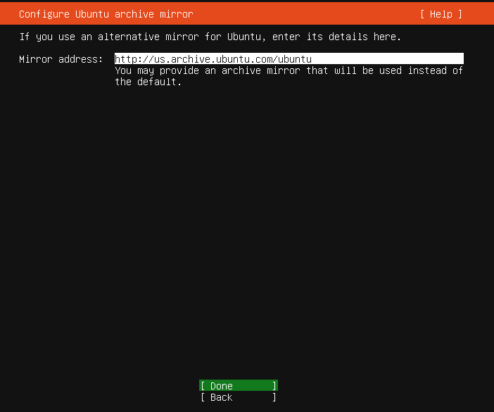
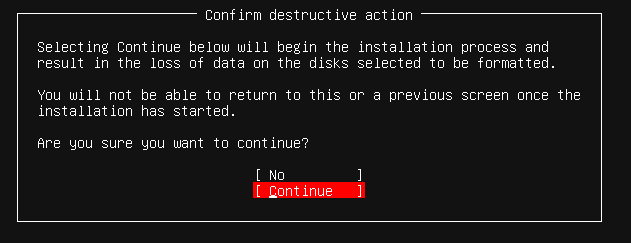
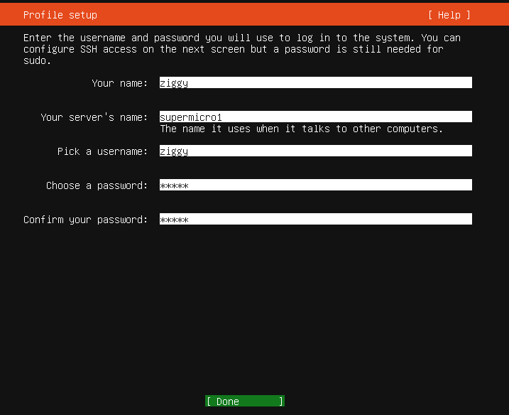
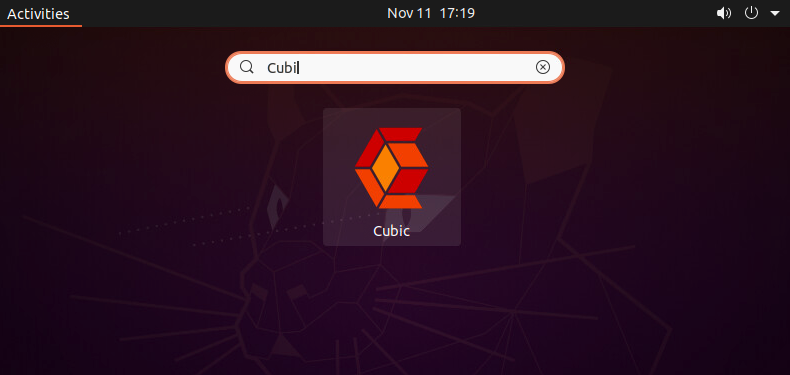

SuperMicro (UCPE) setup
SuperMicro (UCPE) setup@
Follow this guild to setup the SuperMicro box for use with V7 network. The OS for this white box will be Ubuntu 20.04
1. Introduction@
We have not decided how to deliver our installation media to the customer yet. That will be determined later on based on the system integrator we pick.
There are three approaches on how to deliver the image.
2. Cubic Approach@
2.1 General info@
With the Cubic approach, the customer get a modified Ubuntu 20.04 installation image. This section is going to cover how to create that image. The image will not be CIS hardened. The CIS hardening script renders the installation image useless. The CIS hardening will need to be called via cloud-init after the installation, which makes the installation process much longer. So this approach is not desirable.
2.2 Obtain the installation media and create installation USB@
The Cubic requires GUI to run, so the installation ISO can be the desktop version of the Ubuntu20.04. But the installation ISO we going to create is based on the server version, so we going to cover the steps based on Ubuntu 20.04 server installation.
This document is not going to cover how to create USB installation stick.
2.3 Install Ubuntu 20.04 server on Supermicro@
Before your installation starts, make sure you connect the ethernet cable to the first interface on the box. This will make setup the interface a little easier.
Boot up the installation media and start the installation.

Choose the default "English" language or choose your desired language.

Choose "Continue without updating".

Keep the default keyboard layout or choose your keyboard layout (for different language)

On the Network interface page, if the interface is connected, you should see an IP address assigned automatically. If you need to assign a manual IP, you can do so now. Please write down the IP address, you will need that for the later steps.

Skip the Proxy address if you don't use proxy.

Keep the default Mirror address and continue

Use the entire disk (the default) for installation.


Hit continue to confirm the selection

Choose your username and server name. Write down the username. We will need the username to login to the system to do future configuration.

Enable "Install OpenSSH server" for remote access to the server.

Skip the snaps selection and continue.

Now system will go into installation and update of the security package. It will take few minutes to finish.

When the installation completes, you can reboot the server.
2.4 Install GUI@
ssh into the box by using the IP address obtained above. Install the GUI and cubic
ssh ziggy@192.168.1.63
ziggy@192.168.1.63's password:
> sudo apt update
> sudo apt install tasksel
> sudo tasksel install ubuntu-desktop
> sudo apt-add-repository ppa:cubic-wizard/release
> sudo apt install cubic
Restart the box and login from the graphic terminal.
> sudo shutdown -r 0

2.5 Generate custom installer using Cubic@
Copy Ubuntu 20.04 server image (ISO) into the box. If you have the image already, you can simply scp into the box. Or you can download it again into your box by using firefox browser.
> scp ubuntu-20.04.1-live-server-amd64.iso ziggy@192.168.1.63:
ziggy@192.168.1.63's password:
ubuntu-20.04.1-live-server-amd64.iso 100% 914MB 96.2MB/s 00:09
Copy setup ansible playbook to the box.
> scp supermicro_playbook.tgz ziggy@192.168.1.63:
ziggy@192.168.1.63's password:
supermicro_playbook.tgz 100% 147KB 24.4MB/s 00:00
Start the Cubic on the desktop. 
Create a directory (cubic1) to save the custom image

Choose the Ubuntu 20.04 server image. (Rest of the fields will fill themselves)

Once the image is decompressed, you will see a "Custom Ubuntu ISO Creator" window. Copy the supermicro ansible tarball into the that window. then do the following commands:
> sudo apt install ansible
> tar xf supermicro_playbook.tgz
> cd supermicro_playbook
> ansible-playbook -i hostfile ubbox.yml
Once the ansible successfully ran (if it is not successful, you can rerun it again), you can delete the playbook.
> cd
> rm -rf supermicro_playbook
> rm -rf supermicro_playbook.tgz
Hit Next on Cubic window and generate the installation image.
3 Create Ansible playbook for integrator@
Follow section 2.3 to install Ubuntu 20.04 on the system.
Then copy the ansible playbook to the system.
> scp supermicro_playbook.tgz ziggy@192.168.1.63:
Login to the system.
> ssh ziggy@192.168.1.63
Perform the following command to run the playbook.
> tar xf supermicro_playbook.tgz
> mkdir supermicro_playbook
> cd supermicro_playbook
> tar xf ../supermicro_playbook.tgz
> sudo apt install ansible
> sudo su
> ansible-playbook -i hostfile image-build.yml
Note
If the default username (ziggy) changes, we will need to update the ansible-playbook accordingly.
4 Create an golden image for the integrator@
Follow steps in section 3 to setup the box.
Use a live CD (for example Fedora LiveCD) to bootup the system. This ensures the Ubuntu 20.04 installation disk is not the running disk of the OS. We also need another USB stick to save the image (the live CD most likely will have a READ only system).
After boot up the system with the live CD, open a terminal windows and check what disks are on the system.
$ lsblk
NAME MAJ:MIN RM SIZE RO TYPE MOUNTPOINT
sda 8:0 1 14.5G 0 disk
└─sda1 8:1 1 14.5G 0 part /run/initramfs/live
sdb 8:16 1 28.9G 0 disk
└─sdb1 8:17 1 28.9G 0 part /run/media/liveuser/ADATA UFD
loop0 7:0 0 12K 1 loop
loop1 7:1 0 1.8M 1 loop
└─live-osimg-min 253:3 0 6G 1 dm
loop2 7:2 0 1.3G 1 loop
loop3 7:3 0 6G 1 loop
├─live-rw 253:1 0 6G 0 dm /
├─live-base 253:2 0 6G 1 dm
└─live-osimg-min 253:3 0 6G 1 dm
loop4 7:4 0 512M 0 loop
└─live-rw 253:1 0 6G 0 dm /
nvme0n1 259:0 0 238.5G 0 disk
├─nvme0n1p1 259:1 0 512M 0 part
├─nvme0n1p2 259:2 0 1G 0 part
└─nvme0n1p3 259:3 0 237G 0 part
└─ubuntu--vg-ubuntu--lv
253:0 0 118.5G 0 lvm
As you can see, the "sda1" is the liveCD. "sdb1" is the USB disk for image. And "nvme0n1" is the internal disk that has our Ubuntu20.04 installed on.
Now, let's mount the "sdb1" and dump image into it. (Note, the image will be compressed to save disk storage.
$ mkdir outdisk
$ sudo mount /dev/sdb1 outdisk
$ cd outdisk/
$ sudo dd if=/dev/nvme0n1 |bzip2 --best >image.bz2
500118192+0 records in
500118192+0 records out
256060514304 bytes (256 GB) copied, 2268.42 s, 113 MB/s
$ ls -l
total 1942912
-rw-r--r--. 1 liveuser liveuser 1989533754 Nov 18 12:47 image.bz2
Summary
The "image.bz2" will be shipped to the integrator to burn into their units.
4 Procedure for burning the produced image@
This section describes a way to burn the UCPE with the image produced in section 3.
Bootup the liveCD with the image USB inserted into the unit.
Open a terminal. And perform the following. (Please note, the "status=progress" is optional, but it does give good indication where the process is at the moment you monitor the action.
$ mkdir imagedisk
$ sudo mount /dev/sdb1 imagedisk
$ bunzip2 -c image.bz2 | sudo dd of=/dev/nvme0n1 status=progress
256045675008 bytes (256 GB) copied, 4797.524047 s, 53.4 MB/s
500118192+0 records in
500118192+0 records out
256060514304 bytes (256 GB) copied, 4798.08 s, 53.4 MB/s